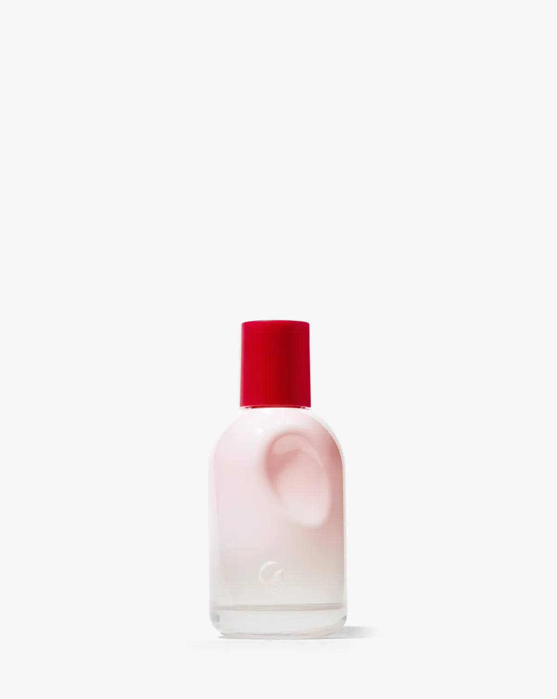

Glossier You Eau de Parfum, 50ml (1.69 oz)
Glossier You is the musk layer of our scent stack. It is a skin scent — a soft, warm musk that blends with your own skin instead of sitting on top of it, so it smells a little different on everyone who wears it. That is exactly what makes it good for layering: it never fights the vanilla underneath.
What it smells like
- Top: pink pepper — bright and a little spicy
- Heart: iris — powdery and floral
- Base: ambrox — creamy, musky and a touch salty
How to layer it — vanilla + musk stack
- Step 1 — vanilla base: Lattafa Yara, two sprays on the neck and wrists.
- Step 2 — musk layer: Glossier You, one spray on each wrist and one behind the ears. Let the two settle together for a few minutes.
- Step 3 — optional amber finish: one spray of Lancôme La Vie Est Belle on top for a warmer, sweeter dry-down.
Why this bottle: the 50ml size is the everyday size — big enough for months of daily layering, small enough to carry. It is one of the best-selling musk perfumes on Amazon.

As an Amazon Associate I earn from qualifying purchases.